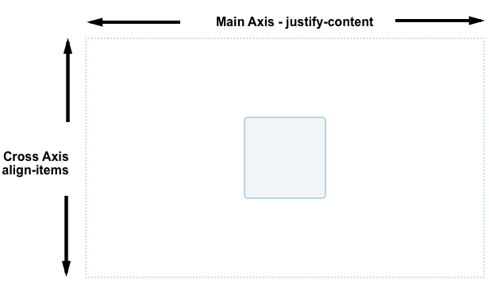
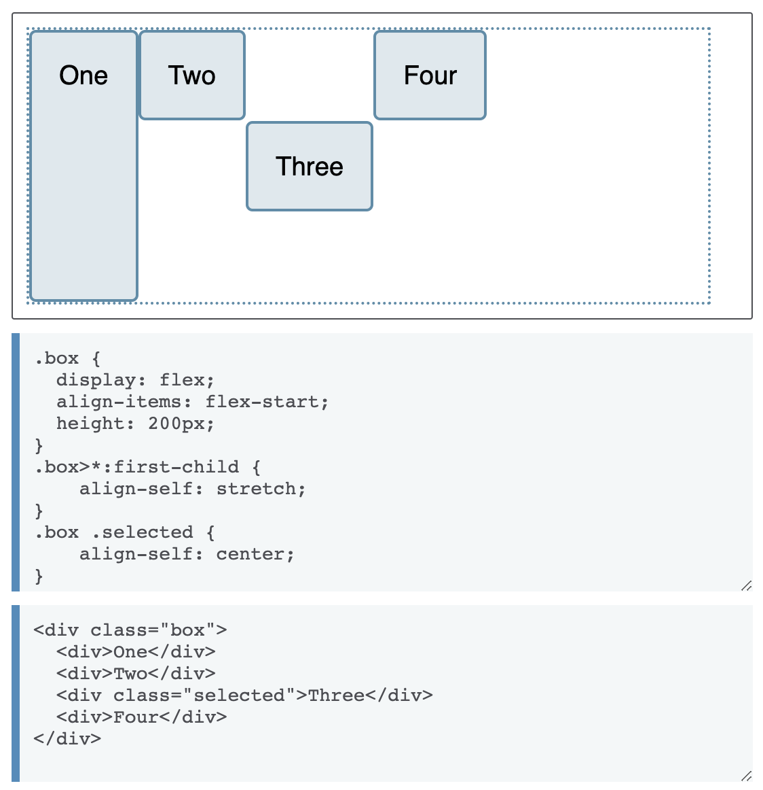
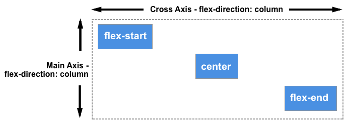
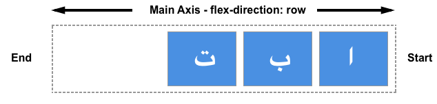

flex容器中的对齐方式
flexbox 之所以能迅速吸引开发者的注意，其中一个原因就是它首次为网页样式居中提供了合适的方案。得益于它提供的合适的垂直居中能力，我们可以很轻松地把一个盒子居中。
通过align-items属性，可以将交叉轴上的 item 对齐。而使用justify-content则可以对齐主轴上的项目。

控制对齐的属性
- justify-content - 控制主轴（横轴）上所有 flex 项目的对齐。
- align-items - 控制交叉轴（纵轴）上单行内 flex 项目的对齐。
- align-content - 控制“多条主轴”的 flex 项目在交叉轴的对齐。
- align-self - 控制交叉轴（纵轴）上的单个 flex 项目的对齐。
交叉轴
如果我们在父级的容器元素上添加display: flex 属性，那么容器里的所有子元素将会变成横向排列的flex项目。所有的flex项目会撑满交叉轴方向的高度，因为display: flex 属性会将 flex 项目的高定义成容器的高度。

flex items 的高度全都变成一样的原因是 align-items 属性的初始值默认为 stretch 控制交叉轴对齐。
我们可以使用其他的值来控制 flex items 的对齐方式：
- align-items: flex-start 单行内flex项目的开始端对齐
- align-items: flex-end 单行内flex项目的结束端对齐
- align-items: center 单行内flex项目居中对齐
- align-items: stretch 单行内flex项目撑满flex容器
- align-items: baseline 单行内flex项目的基线对齐
align-self 用于对齐单个 flex子项
align-items 属性是给所有 flex 项目统一设置 align-self 的对齐属性。这意味着你能给单个 flex 项目明确地声明 align-self 属性。align-self 拥有 align-items 的所有属性值，另外还有一个 auto 能重置自身的值为 align-items 定义的值。

在上面的一个例子中，flex 容器为 align-items: flex-start，这意思是所有的 flex 项目都在交叉轴方向的开始端对齐。我用 first-child 选择器给第一个 flex 项目设置了 align-self: stretch ；另外一个selected 项目用设置成 align-self: center 。
改变主轴方向
flex-direction 是 row,意味着主轴是水平方向，交叉轴对齐则是垂直方向由上至下。

flex-direction 为 column ，意味着主轴是垂直方向，交叉轴对齐则是水平方向由左至右。

轴对齐内容—— align-content 属性
如果你有一个折行的多条 flex 项目的 flex 容器，你可以使用 align-content 来控制每行之间空间的分配，在这种特定的场景叫做packing flex lines。
要使得 align-content 生效，你需要你的 flex 容器的 height 要大于 flex 项目的可视内容。然后它会将所有的 flex 项目打包成一块之后再对齐剩下的空间。
align-content 属性的值如下：
- align-content: flex-start
- align-content: flex-end
- align-content: center
- align-content: space-between
- align-content: space-around
- align-content: stretch
- align-content: space-evenly （没有在 Flexbox 特性中定义）
在下面的例子，有一个 400px 高的 flex 容器，能足够地显示 flex 项目。align-content 的值为 space-between 等同于分配 flex 行之间的空间。

在强调一次我们可以切换我们的 flex-direction 为 column 去观察这个属性的行为是怎样的。和之前一样，我们需要足够的交叉轴空间去显示所有的 flex 项目之外还有有一定的自由空间。

对齐主轴内容
到目前我们已经看到 flex 项目是如何在交叉轴上对齐的，现在我们可以看一下主轴上的对齐。这里只有一个属性是用于主轴上对齐—— justify-content

justify-content 属性有和 align-content 一样的属性值：
- justify-content: flex-start
- justify-content: flex-end
- justify-content: center
- justify-content: space-between
- justify-content: space-around
- justify-content: stretch
- justify-content: space-evenly （没有在 flexbox 特性中定义）
对齐和书写模式
记得这些所有的对齐方法，属性值 flex-start 和 flex-end 是受书写模式的影响的。如果 justify-content 的值是 flex-start 而已你的书写模式是从左到右的话，那么 flex items 就会从 flex container 的左边开始排列。

反之，则会 flex 项目就会从 flex 容器的右边开始排列。

对齐和 flex-direction
如果你改变 flex-direction 属性，主轴起始线也会改变——例如，使用 row-reverse 代替 row。
这似乎有一点令人困惑，需要记住的规则就是，当没有设置 flex-direction 时，flex 项目的排列方向与文档语言的文本沿行内轴的排列方向一致。flex-start 就是一个句子中文本的起始处。
你可以通过设置 flex-direction: column，使弹性项目沿着文档语言的块级轴方向显示。那样话，flex-start 就是文本第一个段落的顶端起始处。

如果你将 flex-direction 的值改成 row-reverse 或者 column-revers ，那么flex 项目会沿着文档语言的文本书写方向的相反方向，从轴的尾端开始排列。flex-start 就会变为轴的尾端。也就是说，沿着行内轴时，这个位置就是每行文本的换行处；沿着块级轴时，就是文本最后一个段落的底部。

在主轴上使用margin 对齐
我们想要处理个别flex 项目在主轴上的对齐，但是没有 justify-items 属性或者 justify-self 属性可用，因为flex 项目会被当成一个组来对齐。然而，我们可以使用 margin 来处理一些flex 项目或者一组flex 项目想和其他flex 项目分离开的对齐情况。
在下面这个在线例子中，flex 项目按默认方式简单地沿行排列，而样式类 push 有设置有 margin-left: auto。你可以尝试删除它，或者把这个类名加到别的flex 项目上，你会看到它是怎样影响flex 项目排列的。
order 属性
order属性旨在按顺序排列项目。这意味着为项目分配了代表其组的整数。然后，按照该整数（最低的值）首先按照视觉顺序放置项目。如果多个项目具有相同的整数值，则在该组中按照源顺序对项目进行布局。
flex 项目默认 order 值为 0, 因此整数值大于 0 的项目，将会显示在那些未指定 order 值的项目之后。
您还可以使用负值，这很有用。如果要先显示一个项目，并保持所有其他项目的顺序不变，则可以将该项目的顺序设为-1。由于该值小于 0，因此始终会首先显示该项目。

总结
- 容器属性
dispaly:
flex-direction: 控制主轴方向；
flex-warp：控制主轴是否换行；
flex-flow:
justify-content:控制主轴对齐方式
align-item:控制交叉轴行内元素对齐方式
align-content:控制“多条主轴”的flex项目在交叉轴的对齐
- flex元素属性
flex-grow:控制元素拉伸
flex-shrink:控制元素压缩
flex-basis:控制元素空间大小
flex
align-self:控制交叉轴上的单个flex项目的对齐
align-items与align-content 的区别
- align-items：
- 作用对象：弹性盒子容器(flex containers)；
- 描述：该属性可以控制弹性容器中成员在当前行内的对齐方式。当成员设置了align-self 属性时，父容器的 align-items 值则不再对它生效；
- align-content：
- 作用对象：弹性盒子容器多行的控制(multi-line flex containers)；
- 描述：当弹性容器在正交轴方向还存在空白时，该属性可以控制其中所有行的对齐方式。Note：该属性无法作用于单行 (flex-wrap: no-wrap) 弹性盒子；
- 对比
- 相同点：都被用来设置对齐行为。
- 不同点：
- align-items 的设置对象是行内成员;
- align-content 的设置对象是所有行，且只有在多行弹性盒子容器中才生效。
align-content 显示效果
默认设置 display:flex后；
flex-direction:row
flex-warp:nowarp
justify-content:flex-start
align-item:stretch
flex-basis:auto
flex-grow:1
flex-shrink:1
align-self:stretch